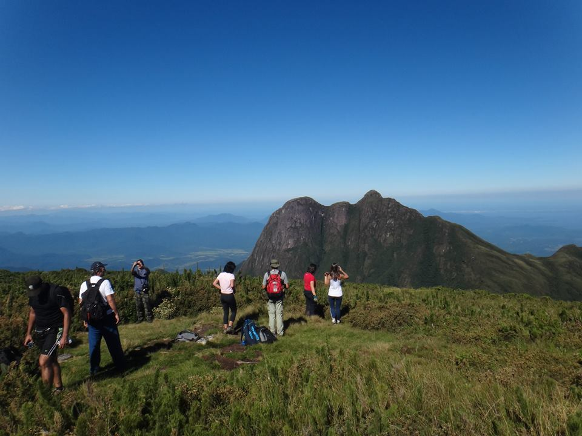
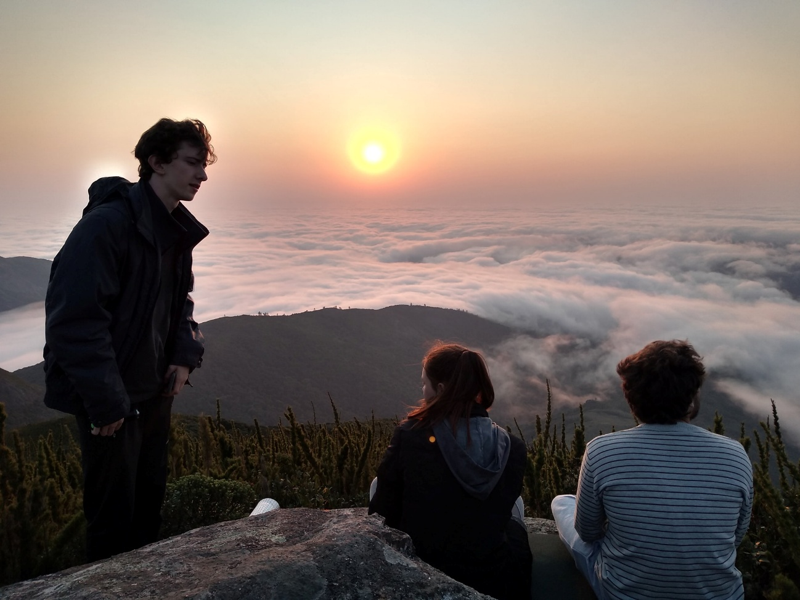
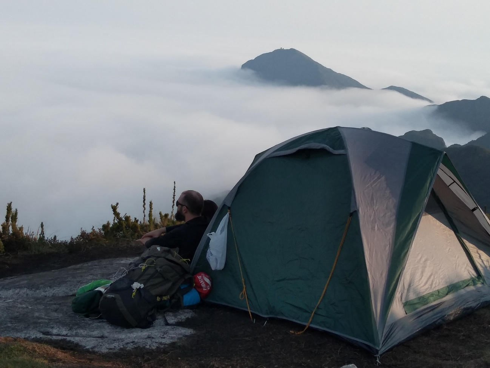
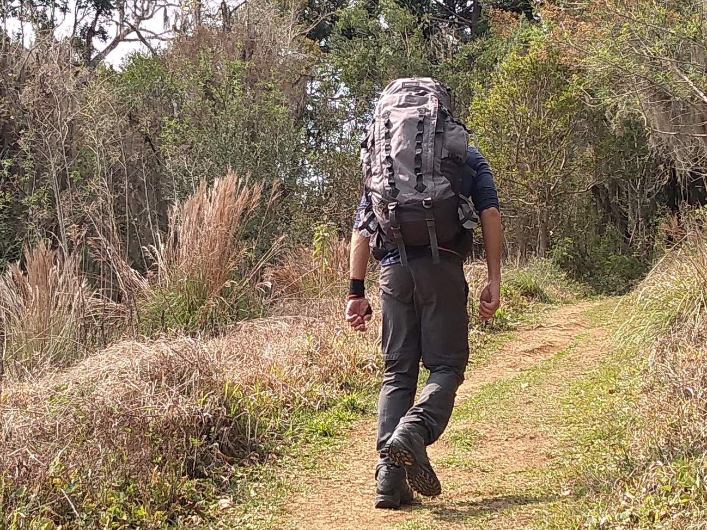
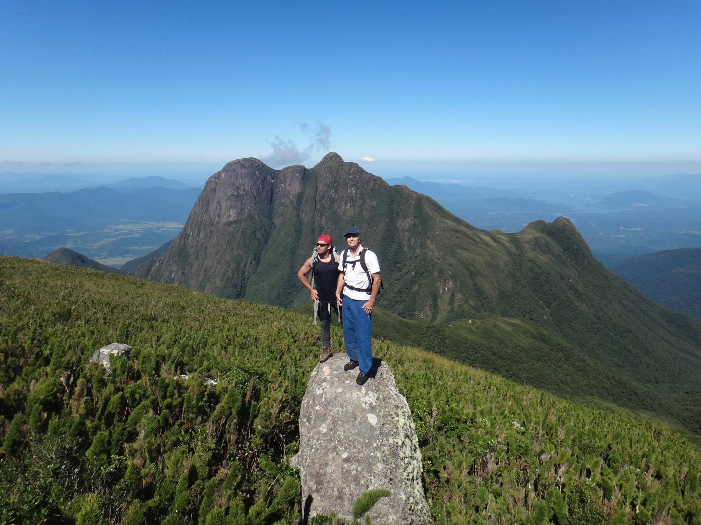
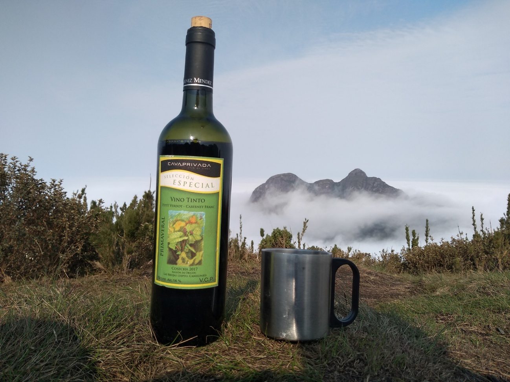

Detalhes do Roteiro
Pico Caratuva 1.850m (PR) – É a segunda maior montanha em altitude da Região Sul do Brasil. A subida ao cume leva em torno de 3 horas, atravessando paisagens de rara beleza dentro da Floresta Atlântica, passando por rios, bromélias e caraguatás. No seu cume a vegetação característica da região é a Caratuva, uma espécie de bambu anão de altitude e que batiza a montanha.
Serviços incluídos:
Translado privativo in/out, saindo de Morretes e Curitiba;
Informações importantes
- Duração do passeio: 1 dia;
- Tempo de Caminhada: 03h00minh;
- Atividades de aventura: Caminhada, escalaminhada;
- Dificuldade: Médio - A trilha é leve, porém extensa, exige paradas com tempo regular para descanso e apreciar o visual;
- Limite de idade: Mínimo 12 anos, não tem limite máximo;
- Condicionamento físico: Normal;
- Atrativos naturais: mata atlântica, cachoeira, montanhas e trilhas.
- Usar bota de trilha, roupas leves e confortáveis, bastão de caminhada;
- Levar mochila pequena para caminhada;
Tarifas
| N° de pessoas | Guia bilíngue | Adulto | Criança |
|---|---|---|---|
| 2 a 4 | Sim | R$ 575.00 | R$ 499.00 |
| 5 a 13 | Sim | R$ 425.00 | R$ 380.00 |
Galeria de Fotos





